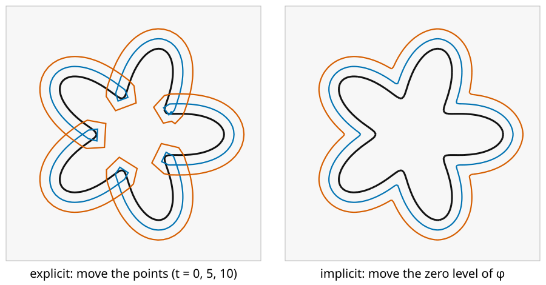
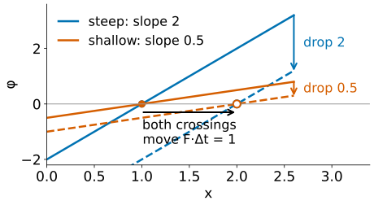
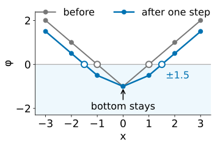
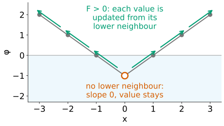
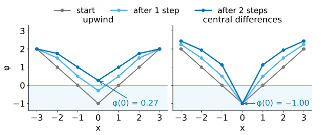
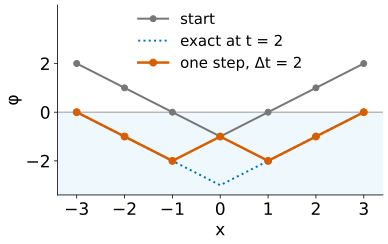
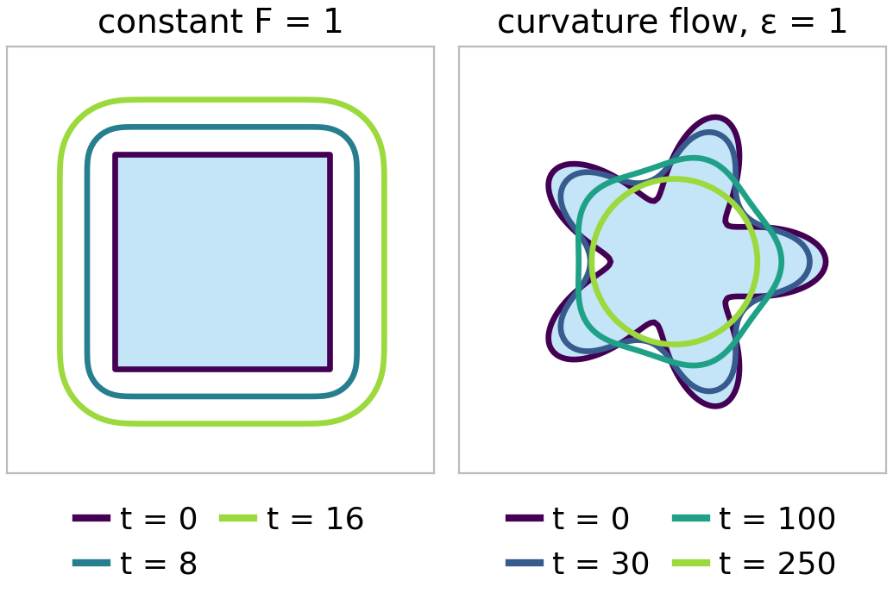
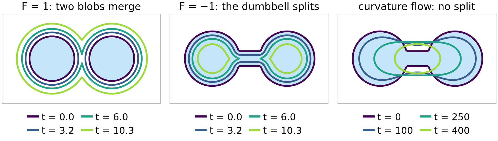
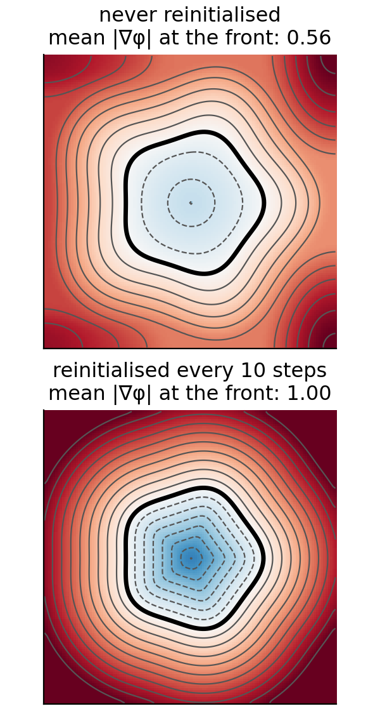

Last unit: a curve is the zero level of \phi. Now we make it move: every point of the curve travels along its normal with a speed F. Instead of moving points, we change the image \phi a little at every time step.
Why moving the points of a polygon goes wrong.
The level set equation\phi_t + F|\nabla\phi| = 0, first in 1D.
One time step on the grid: forward Euler in time, upwind differences in space.
How large a step may be: the CFL condition, seen in the demo first.
Speeds: constant (grass fire) and curvature flow.
Merging and splitting for free; reinitialisation to keep \phi healthy.
Slides titled The math give the formulas and proofs; the ideas are complete without them.
The task: move a curve along its normal
Every point of the curve moves with speed F along its outward normal (F > 0: outward, F < 0: inward).

Explicit (left): move each point of a polygon along its normal. At the dents the points converge, the curve crosses itself and forms loops (“swallowtails”); elsewhere the points spread apart. Two curves that meet would need surgery to merge.
Implicit (right): the same motion as a moving zero level. No loops, corners where the fronts meet, and the topology may change.
The idea: change φ, not the points
Let \phi depend on time. At each pixel, how fast must \phi change so that its zero level moves with speed F?
Picture a slope: where \phi rises steeply, a small decrease of \phi shifts the zero crossing only a little; where it is shallow, the same decrease shifts it far.
To move the crossing outward by F per unit time, \phi must drop by F times its slope: \phi_t = -F\,|\nabla\phi| \qquad\text{the level set equation.}
Only the speed along the normal matters: sliding points along the curve does not change the curve.

The math: deriving the level set equation
A point \mathbf x(t) on the moving curve keeps \phi(\mathbf x(t), t) = 0 for all t. Differentiate with the chain rule: \phi_t + \nabla\phi\cdot\mathbf x'(t) = 0. The point moves along the outward normal with speed F: \mathbf x' = F\,\mathbf n = F\,\nabla\phi/|\nabla\phi|. Then \nabla\phi\cdot\mathbf x' = F\,|\nabla\phi|^2/|\nabla\phi| = F|\nabla\phi|, so \phi_t + F\,|\nabla\phi| = 0. A tangential velocity \mathbf v \perp \nabla\phi adds \nabla\phi\cdot\mathbf v = 0: it does not appear. The same equation holds for every level, not only zero: all level lines move with speed F.
In 1D: an interval that grows
\phi(x) = |x| - 1 describes the interval [-1, 1] (negative inside). With F = 1 the slope is 1 everywhere, so the V shifts down by t: \phi = |x| - 1 - t, the interval is [-1 - t, 1 + t].
On the grid x = -3, \dots, 3, one step of \Delta t = 0.5:
x
−3
−2
−1
0
1
2
3
\phi before
2
1
0
−1
0
1
2
\phi after
1.5
0.5
−0.5
−1
−0.5
0.5
1.5
The crossing moves from \pm 1 to \pm 1.5: exactly F\,\Delta t. Note the bottom of the V: it does not move. Which slope to use there is the question of the next slides.

One time step: forward Euler
Time is discrete: \phi^{n+1} = \phi^n - \Delta t\,F\,|\nabla\phi^n|. This is the first-order Taylor step \phi(t + \Delta t) \approx \phi(t) + \Delta t\,\phi_t (Taylor from Filtering & convolution).
Space is discrete too: |\nabla\phi| from differences of neighbours. Which differences? In the table, at x = -1 the backward difference \phi(-1) - \phi(-2) = -1 and the forward one \phi(0) - \phi(-1) = -1 agree. At x = 0 they disagree: -1 and +1.
Upwind: use the difference on the side the front comes from. A growing front reaches a pixel from inside, so look towards smaller \phi; a shrinking front reaches it from outside.
At the bottom of the V with F > 0, no neighbour is lower: nothing arrives from either side, the slope counts as 0 and the value stays.

Central differences fail at kinks
Central difference at x = 0: (\phi(1) - \phi(-1))/2 = 0. The slope “vanishes” at the kink.
Shrinking interval (F = -1, \Delta t = 0.5): the true interval vanishes at t = 1. Upwind: after two steps every value is positive. Central: the value at x = 0 stays -1forever; the curve never disappears.
Kinks are everywhere in level sets: the middle of every shape (the ridge of the distance function), and wherever two fronts collide.
Central differences also make the scheme unstable for waves: small wiggles grow.

The math: the upwind (Godunov) scheme
With D^-_x\phi = \phi_i - \phi_{i-1} and D^+_x\phi = \phi_{i+1} - \phi_i (and the same in y), Osher & Sethian’s scheme uses, for F > 0, |\nabla\phi|^2 \approx \max(D^-_x\phi, 0)^2 + \min(D^+_x\phi, 0)^2 + \max(D^-_y\phi, 0)^2 + \min(D^+_y\phi, 0)^2, and for F < 0 the same with \max and \min swapped. Then \phi_i^{n+1} = \phi_i^n - \Delta t\,F\,|\nabla\phi|.
F > 0 keeps a backward difference only if it is positive (the lower neighbour is behind), a forward one only if negative.
At the minimum of |x| - 1 with F > 0: D^- = -1, D^+ = +1, both discarded: slope 0. With F < 0: both kept, slope \sqrt 2: the front arrives from both sides.
This is the Godunov flux for the Hamilton–Jacobi equation \phi_t + F|\nabla\phi| = 0; its solution is the “entropy” one, where colliding fronts form a corner instead of crossing.
Try it: moving fronts
How large may a time step be?
Try it first: preset “Δt too large” (1.5 times the limit). After about 15 steps a checkerboard pattern appears in φ and grows until everything explodes.
Rule (Courant, Friedrichs & Lewy, CFL): in one step the front may move at most one pixel: \Delta t \le \Delta x / |F| in 1D.
In 2D a diagonal front moves |F|/\sqrt2 in xand in y, and both count: \Delta t \le \Delta x/(\sqrt2\,|F|), about 0.71/|F| pixels per unit speed.
In 1D with \Delta t = 2 (twice the limit): the values after one step are 0, -1, -2, -1, -2, -1, 0. The V has turned into a zigzag: the information jumped further than one pixel.

The math: why the limit
For F > 0 in 1D near a front where D^-_x\phi > 0, the upwind step is \phi_i^{n+1} = (1 - a)\,\phi_i^n + a\,\phi_{i-1}^n with a = F\Delta t/\Delta x.
For 0 \le a \le 1 the new value is a weighted average of old values: no new maxima or minima, errors cannot grow (monotone scheme).
For a > 1 the weight 1 - a is negative: the scheme extrapolates, and an alternating error \pm\epsilon is amplified by |1 - 2a| > 1 per step.
In 2D the update averages \phi_i, \phi_{i-1,j} and \phi_{i,j-1} with weights 1 - a_x - a_y, a_x, a_y, where a_x = F\Delta t\,|n_x|/\Delta x: the condition is F\Delta t(|n_x| + |n_y|) \le \Delta x, worst at 45°: \sqrt2\,F\Delta t \le \Delta x.
Speeds: grass fire and curvature flow
Constant F (“grass fire”): every point moves the same distance. Growing shapes get rounded corners (a square grown by t gets quarter circles of radius t); shrinking shapes get sharper; dents fill in.
Curvature flowF = -\varepsilon\kappa: bumps (\kappa > 0) move in, dents (\kappa < 0) move out. The curve gets smoother and shorter, like a rubber band.
A circle of radius r under curvature flow (\varepsilon = 1) shrinks with speed 1/r: r(t) = \sqrt{r_0^2 - 2t}. A circle of radius 30 vanishes at t = 450.
Combinations F = c - \varepsilon\kappa: move with speed c, but smooth the curve while doing it (the basis of the next two units).
The curvature term uses central differences (it behaves like diffusion, not like a wave) and needs a stricter step: \Delta t \le \Delta x^2/(4\varepsilon).

The math: curvature flow
Circle.\kappa = 1/r, the inward speed is \varepsilon/r: r' = -\varepsilon/r, so \tfrac{d}{dt}r^2 = -2\varepsilon and r^2 = r_0^2 - 2\varepsilon t. Vanishing time r_0^2/(2\varepsilon).
Any closed curve. The area changes by A' = -\oint F\,ds = -\varepsilon\oint\kappa\,ds, and for a simple closed curve the total turning \oint\kappa\,ds = 2\pi. So A' = -2\pi\varepsilon: every simple closed curve loses area at the same rate. (Check for the circle: \tfrac{d}{dt}\pi r^2 = -2\pi.)
Grayson’s theorem (1987): a simple closed curve under curvature flow stays simple, becomes convex, and shrinks to a round point. It never splits: a dumbbell’s thin neck has \kappa < 0 on its sides and widens.
Stability. The curvature term is like the heat equation \phi_t = \varepsilon\nabla^2\phi (for a signed distance), for which the explicit step needs \varepsilon\Delta t \le \Delta x^2/4.
Topology for free
Two growing blobs: their \phi is the minimum of two distances (union). When the zero level passes the saddle between them, the contour becomes one. No code detects this.
A dumbbell shrinking with constant speed: the bar disappears first, and the contour splits in two.
Explicit polygons cannot do either without checking every pair of edges for collisions.
But not every flow changes topology: under pure curvature flow the dumbbell does not split (Grayson’s theorem): it becomes round and vanishes as one piece. The demo shows it; expect the neck to pinch, and it widens instead.

Try it: what can go wrong
Keeping φ healthy: reinitialisation
After many steps \phi is no longer a signed distance: level lines bunch up in some places and spread out in others (curvature flow moves different levels at different speeds). Then |\nabla\phi| is far from 1, gradients and curvatures get noisy, and the step-size rule based on “one pixel” is no longer meaningful.
Reinitialisation: replace \phi by the signed distance to its own zero contour, without moving that contour.
Recompute distances: find the zero contour (marching squares), measure each pixel’s distance to it, keep the sign of \phi. Exact; fine for a 128 \times 128 grid.
Let it flow: evolve \phi with a rule that pushes |\nabla\phi| towards 1 while the zero level stays put (next slide).
Every 10–20 steps is typical. To save work, only pixels in a narrow band around the front are updated and reinitialised.
A front that only grows can instead be described by its arrival time, computed in one sweep: fast marching, on the dynamic programming day (“Dijkstra with an upwind update”). With speed 1 the arrival time is exactly the distance transform.

The math: the reinitialisation equation
Sussman, Smereka & Osher (1994): evolve in an artificial time \tau\phi_\tau = \operatorname{sign}(\phi_0)\,\big(1 - |\nabla\phi|\big), with \phi_0 the function before reinitialisation and a smoothed sign S = \phi_0/\sqrt{\phi_0^2 + \Delta x^2}.
Where |\nabla\phi| < 1 the values move away from zero, where |\nabla\phi| > 1 towards zero; at steady state |\nabla\phi| = 1.
On the zero level \operatorname{sign}(\phi_0) = 0: the curve does not move (in practice it shifts a little; the exact method (a) avoids this).
It is itself a level set equation, \phi_\tau + S(|\nabla\phi| - 1) = 0, with speed S: information flows outward from the front, so it needs upwind differences, and about as many steps as the width of the band to be corrected.
Summary
A curve moving with normal speed F is the zero level of \phi with \phi_t + F|\nabla\phi| = 0.
One step: \phi \leftarrow \phi - \Delta t\,F\,|\nabla\phi| (forward Euler), with upwind differences: look where the front comes from. Central differences stall at kinks.
CFL: the front moves at most one pixel per step, \Delta t \le \Delta x/(\sqrt2|F|) in 2D; curvature terms need \Delta t \le \Delta x^2/4\varepsilon.
Curvature flow smooths and shrinks; area drops by 2\pi\varepsilon per unit time; it never splits a curve.
Merging and splitting happen by themselves; explicit polygons form swallowtails and need surgery.
Reinitialise\phi to a signed distance every few steps.